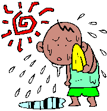

夏バテの原因
１．体内に蓄えられたビタミンやミネラルが汗によって流れ、神経伝達機能が
低下する為、疲れやすくなる。
２．水溶性のビタミンCやB群も多く失われるので、体内の代謝がスムーズに
行なわれず、疲労が蓄積する。
３．外気温と室内温度の差が激しい為、体温調節のコントロール不良によって、
自律神経が不安定になる。
↓
体温の上昇
脳内の視床下部にある中枢神経が食欲を抑制する。
→ 食欲の減退 ⇒ あっさりとした味や、さらっとした食感の食事が多くなる。

たんぱく質や脂肪などの摂取量が減少し、栄養不足！
身体に必要な栄養素が十分に補給されないと、
体内で少しずつ代謝異常が起こり、内臓が疲労し、
全身が疲れてスタミナ不足が起こります。
土曜の丑の日
うなぎにはビタミンAやEが豊富なだけでなく、たんぱく質や脂肪など
エネルギーのもとになる栄養素がたっぷり含まれています。
夏バテには、お勧めの食品ですが、うなぎはリンの含有量が多いので、
少しずつ（３０〜５０ｇ）を１回量で食べるようにしましょう。
ビタミンB群を多く含む食品
| ビタミンB1 | ビタミンB2 | ||
| 豚ヒレ肉（８０ｇ） | ０．９８mg | 牛レバー（５０ｇ） | １．５０mg |
| 豚ロース肉（８０ｇ） | ０．７７mg | 鶏レバー（５０ｇ） | ０．９０mg |
| うなぎ・白焼き（１００ｇ） | ０．５５mg | うなぎ・蒲焼（１００ｇ） | ０．７４mg |
| まだい・養殖・生（１００ｇ） | ０．３４mg | ズワイガニ・生(１００ｇ) | ０．６０mg |
| ズワイガニ・生（１００ｇ） | ０．２４mg | 塩さば（１００ｇ） | ０．５９mg |
| その他 | その他 | ||
| 落花生・ごま・きな粉・まいたけ等 | ブリ・納豆・卵・アーモンド・チーズ等 | ||
参考資料 専門医が教えるビタミン・ミネラル早わかり
吉川敏一著 幻冬舎刊